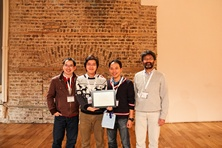

Siriwat Kasamwattanarote
Blockchain Research Engineer, Strategic Software Development, SBI BITS
Download PDF
TXT
Roppongi T-Cube 20F, 3-1-1 Roppongi, Minato-ku, Tokyo, 106-0032
Mobile: (+81)080-4925-4569
Email: siriwat@live.jp, siriwat@sbibits.com

I’m a Ph.D. in Informatics and I pursued my research on visual retrieval, information retrieval, and data mining during my study. Currently, I work as a blockchain research engineer at SBI BITS, with the objective is trying to build Japan’s first blockchai binary option for liquidity market. Hyperledger is chosen as our candidate among other blockchain technologies available currently, with the integration of Docker (especially Docker swarm) for our fully distributed FX platform. Since Hyperledger and Docker swarm are now not fully compatible, I do a lot research on both technologies and also I’m now involve in joining these communities together.
Technical:
During my Ph.D., I provide several back-end (C++, PHP, and MPI) server services with my own implemented inverted index database and a large-scale HDF5 based file to serve a front-end image search interface based HTML5 and JavaScript [LINK]. This system is running on multiple HPC based Linux servers with my customized build of LFS (Linux from scratch) environment.
During the SBI BITS, I learned a lot on financial terms. The technical skills involved in building our blockchain project are Golang for understanding the Hyperledger framework and creating a chaincode and a consensus algorithm for our business logic, Node.js for building the client side and bridging between the Hyperledger and the Docker swarm, and the basic utilities with MongoDB.
Online demo
Educations
Ph.D. in Informatics
SOKENDAI (The Graduate University for Advanced Studies), Japan
Oct/2012 to Apr/2016
Supervisor: Prof. Shin'ichi Satoh Thesis: Query Bootstrapping: Query Expansion for Visual Search Using Data Mining Approach.[ Thesis ][ Slide'2016 ][ Prezi'2015 ] Project: Online Real-time TV Commercial Retrieval System based on Instance Search. Download SOKENDAI Phd thesis template: [ Git ][ zip ]
M.Sc. in Computer Science
Chulalongkorn University, Thailand
2009 to 2011
CSIT (Computer Science and Information Technology) Supervisor: Assoc. Prof. Nagul Cooharojananone Thesis: Automated Video Surveillance Summarization System.
B.Sc. in Computer Science
Mahidol University, Thailand
2005 to 2008
ICT (Information and Communication Technology)
Supervisor: Dr. Rawesak Tanawongsuwan
Research: Intelligent Image Resizing (based on Seam Carving for Content-Aware Image Resizing).
Invited Speaker
Trading Derivatives on Hyperledger
at LinuxCon + ContainerCon Japan 2016 (LCCC'16)
2016
Title: Trading Derivatives on Hyperledger Siriwat Kasamwattanarote, Fernando Vazquez, LinuxCon + ContainerCon Japan 2016, Tokyo, Japan, Jul. 15, 2016 [ Link ] [ Slide ]
Awards
Best Demo and Poster Award
at Winter School on Multimedia Processing 2014 (WMPA'14), co-located with the MMM2014 conference, Dublin, Ireland
2014
Title: Tell me about TV commercials of this product Siriwat Kasamwattanarote, 1st Winter School on Multimedia Processing and Applications, Dublin, Ireland, Jan. 6-8, 2014 [ Link ] 
Grand Prize, Winner
at Tokyo Academic Park Photo Contest 2014
2014
Photo title: "Shimmer of Spring"
Siriwat Kasamwattanarote, Tokyo International Exchange Center (TIEC), Tokyo, Japan. 28 Oct-9 Dec, 2014 [ Link1 ][ Link2 ]


Query Bootstrapping: A Visual Mining based Query Expansion — IEICE-ED Transactions 2016
Siriwat Kasamwattanarote, Yusuke Uchida, Shin'ichi Satoh, IEICE Transactions on Information and Systems, Vol. E99-D NO. 2, pp 454-466, Feb. 1, 2016. [ Link ][ Pdf ]
PVSS: Portable Visual Search Service for Researchers — ICIMCS 2015
Siriwat Kasamwattanarote and Shin'ichi Satoh, 7th International Conference on Internet Multimedia Computing and Service, Zhangjiajie, China, Aug. 19-21, 2015. [ Link ] [ Slide ] [ Git ]
Tell me about TV commercials of this product — MMM 2014
Cai-Zhi Zhu, Siriwat Kasamwattanarote, Xiaomeng Wu, and Shin'ichi Satoh, The 20th Anniversary International Conference on MultiMedia Modeling, Dublin, Ireland, pp. 242-253, Jan. 6-10, 2014. [ Link ]
Connect Commercial Films with Realities — ICMR 2013
Cai-Zhi Zhu, Siriwat Kasamwattanarote, Xiaomeng Wu, and Shin'ichi Satoh, 2013 International Conference on Multimedia Retrieval, Dallas, Texas, USA, pp. 323-324, Apr. 16-20, 2013. [ Link ] [ Video ]
Automated real-time video surveillance summarization framework — JRTIP 2012
Nagul Cooharojananone, Siriwat Kasamwattanarote, Shin'ichi Satoh, and Rajalida Lipikorn, Journal of Real-Time Image Processing, Accepted on 16 Sep. 2012. Springer [ Link ]
Real-Time Video Surveillance Summarization and Trajectory Search using Direct Shift Collision Detection — Master thesis
Siriwat Kasamwattanarote, Master's thesis, Chulalongkorn University, Dec. 24, 2011 [ Link ]
Real Time Trajectory Search in Video Summarization using Direct Distance Transform — ICSP 2010
Nagul Cooharojananone, Siriwat Kasamwattanarote, Shin'ichi Satoh, and Rajalida Lipikorn, 10th International Conference on Signal Processing, Beijing, China, vol. 6297/2010, pp. 932-935, Oct. 24-28, 2010 [ Link ]
Real Time Tunnel Based Video Summarization using Direct Shift Collision Detection — PCM 2010
Siriwat Kasamwattanarote, Nagul Cooharojananone, Shin'ichi Satoh, and Rajalida Lipikorn, 11th Pacific Rim Conference on Multimedia, Shanghai, China, pp. 136-147, Sep. 21-24, 2010 [ Link ]
Professional Experiences
Blockchain research engineer
at SBI BITS, Tokyo, Japan
May 2016 to Present
Project #1: Blockchain based binary option. -- Tasks -- Integration of Hyperledger with Docker swarm. -- Tasks -- Building an API for accessing the blockchain based database. -- Tasks -- Implementing a business logic into the chaincode.
Research Assistant
at Digital Content and Media sciences Research Division, National Institute of Informatics, Tokyo, Japan
Oct 2012 to Mar 2016
Project #1: Instance search framework for large-scale image and video retrieval -- Tasks -- Building a full image retrieval system, e.g. several server side services for handling image queries and a client side HTML5-based UI. Project #2: NII Commercial film retrieval [Demo Link] -- Tasks -- Building a client side UI and several server side retrieval modules. Project #3: NII KAORI, face retrieval system [Demo Link] -- Tasks -- Applying an existing client UI for our Lab’s face retrieval backend.
Summer Internship Program
at Rakuten Institute of Technology (RIT), Rakuten Inc, Shinagawa, Tokyo, Japan
2013
Project: Instance search based image retrieval for character recognition -- Tasks -- Using an instance search technique to recognize characters in a natural scene.
Internship Student (2)
at National Institute of Informatics, Japan
2011 and 2012
January to June 2012 - Instance Search Demonstration System Supervisor: Prof. Shin'ichi Satoh -- Tasks -- Building a web interface for sending image query and receiving the related commercial video from Japanese TV. February to August 2011 - Agricultural Image Processing Supervisor: Assoc. Prof. Kitamoto Asanobu -- Tasks -- Developing a tool to extract useful information from the existing agriculture video collections
R&D Intern Student
at IWANE Laboratory, Thailand
2007
Position: Research and Development (R&D) Project: 3D/2D video visualizer for street-view spherical video -- Tasks -- Developing a video street view module for a Windows Mobile 6
Technical Experiences
Programming language and Script
C++ (skillful), C, Python, C#, Java, Bash, Objective-C, HTML5, JavaScript, PHP, CSS, jQuery, SQL, ASP, and Assembly
Technology and Library
OpenCV, MPI, OpenMP, Docker, MongoDB, SQL, HDF5, Hadoop, .NET Framework, WPF, Silverlight, DirectX, OpenGL, Tensorflow
Technology and Library
Computer: Linux (HPC with RedHat, CentOS, Ubuntu), Linux prefix (LFS), Microsoft Windows
Mobile: Android, Apple iOS, Windows Phone
Development environment (IDE)
Codelite, PyCharm, Codeblocks, Microsoft Visual Studio, XCode, and Eclipse
Others
Computer network topology design, maintenance, and support
Project Experiences
System and Framework
- NII KAORI Person Search Interface, a wrapper web interface for searching person with video clip results (HTML5, JavaScript, PHP, 2013)
- Commercial Film Retrieval, server-client based video retrieval (C++, OpenCV, HTML5, JavaScript, PHP, 2012)
- Instance Search, NII student internship project (C++, HTML5, JavaScript, PHP, 2012)
- Simply-Delicious, a simple bulletin board system (ASP, SQL, 2006)
Standalone Application
- Agriculture Analyser, NII student internship project (C#, OpenCV, 2011)
- Video Surveillance Summarization and Retrieval (C#, OpenCV, 2010)
- Seam Carving for Content-Aware Image Resizing: senior project (C#, OpenCV, 2008)
- Gesture Analyser for multi-touch gallery (C#, OpenCV, WPF, 2008)
- Mobile Screen Locker on Windows Mobile 6.1 (C#, 2008)
- 3D Video Player with GPS based map on Windows Mobile 6.1 (C#, DirectX, 2008)
- Image converter based on file format and color depth (C#, 2008)
- Easy-Acc accounting system (C#, 2007)
Useful Tools and Toys
- Wumpus World using knowledge based to solve the problems (C#, 2008)
- N-Puzzle, multi-heuristics based puzzle (C#, 2008)
- Soft shadow rendering system (C++, 2007)
- File encryptor-descriptor based on AES algorithm (Rijndale) (C#, 2007)
- Network package capture software by using PCap library (C#, 2007)
- Ciphertext decryptor with using key and brute forcing key (C#, 2007)
- File compression using Huffman Code algorithm (C#, 2007)
- 8-Puzzle using Breadth First Search algorithm (C#, 2007)
- Real-time text encryption system using S-Box algorithm (Assembly, 2006)
Note:
Thanks for visiting my page. If you have any comment or request, please contact me by email siriwat@nii.ac.jp Page created ago. Last updated info: